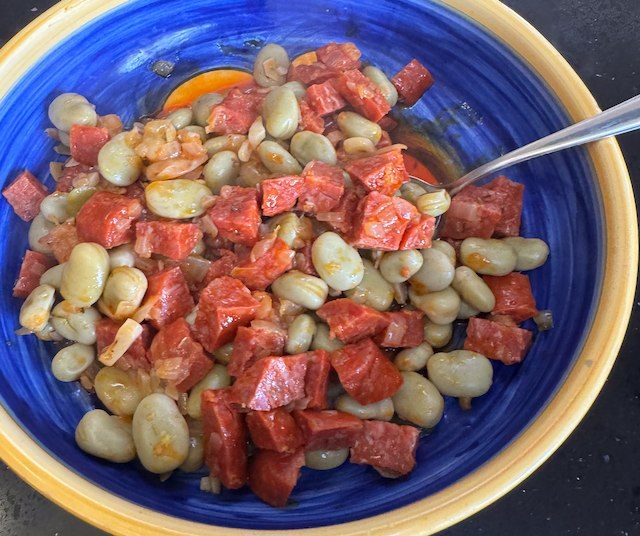

Spanish Beans

Serves: 4 as a side
Cook Time: 30 min
From the spanish chef
Ingredients
- 250g tin broad beans
- 3 tbsp olive oil
- 1 onion, finely chopped
- 5 garlic cloves, thinly sliced
- 1 sprig fresh oregano, chopped
- 90g chorizo
- 1 lemon, zest and juice
- salt and pepper
Method
In a frying pan on medium heat, cook the chorizo until a bit crispy and oil released
In a small pan cook onions, until golden. Then add garlic and oregano and cook for 2 min more.
Add the chorizo and beans to the onion and warm through.
Finish with lemon.